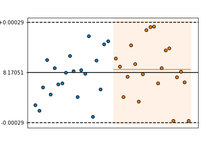
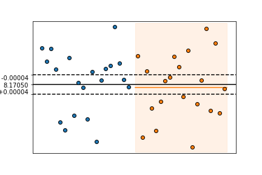
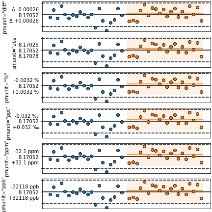
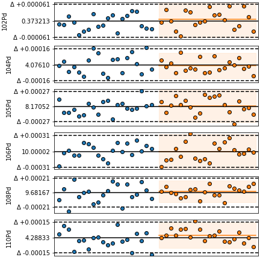

plot_hcompare¶
-
isopy.tb.plot_hcompare(axes, cval=<function nanmean>, pmval=<function nansd>, sigfig=2, pmunit='diff', cline=True, pmline=True, color='black', axis_color=None, ignore_outliers=True, combine_ticklabels=5)[source]¶ A comparison plot for data sets on a hstack.
Calculate the center and uncertainty values for all data plotted on a hstack and set the y axis tick marks at
[cval-pmval, cval, cval+pmval]and format the tick labels according to pmunit.- Parameters
axes (axes, figure, plt) – Either a matplotlib axes object or a matplotlib Figure object. Objects with a gca() method that return a matplotlib axes object, such as a matplotlib pyplot instance are also accepted. If axes is a matplotlib Figure object then
plot_hcompare()will be called on every named subplot in the figure.cval (scalar, Callable, Optional) – Either a scalar representing the center value or a function that will be used to calculate the center value based on all the y-axis data points in axes.
pmval (scalar, Callable, Optional) – Either a scalar representing the uncertainty on the center value or a function that will be used to calculate the uncertainty based on all the y-axis data points in axes.
sigfig (int, Default = 2) – The number of significant figures to be shown on the y-axis tick labels.
pmunit (str, Default = 'diff') –
Defines the unit of the tick labels for the pmline’s. Avaliable options are:
"diff"- The tick labels are shown asf'"Δ {+pmval}"andf'"Δ {-pmval}"."abs"- The tick labels are shown asf'"{cval+pmval}"andf'"{cval-pmval}"."percent"or"%"- The tick labels are shown asf'"{+pmval/cval*100} %"andf'"{-pmval/cval*100} %"."permil"or"ppt"- The tick labels are shown asf'"{+pmval/cval*1000} ‰"andf'"{-pmval/cval*1000} ‰"."ppm"- The tick labels are shown asf'"{+pmval/cval*1E6} ppm"andf'"{-pmval/cval*1E6} ppm"."ppb"- The tick labels are shown asf'"{+pmval/cval*1E9} ppb"andf'"{-pmval/cval*1E9} ppb".
A tuple can be used to set different units for the upper and lower tick labels.
cline (bool, str, Default = True) – If
Truea horizontal line is drawn along cval. IfFalseno line is shown. Can also be a string describing a linestyle defined by matplotlib. See here for a list of avaliable linestyles.Truedefaults to"solid".pmline (bool, str, Default = True) –
- If
Truehorizontal lines are drawn alongcval-pmval` and ``cval+pmval. If
Falseno line is shown. Can also
be a string describing a linestyle defined by matplotlib. See here for a list of avaliable linestyles.
Truedefaults to"dashed".- If
color (str, Optional) –
Color cline and pmline lines. Accepted strings are named colour in matplotlib or a string of a hex triplet begining with “#”. See here for a list of named colours in matplotlib. If
Nonethe default value isblack.axis_color (bool, str, Optional) – If
Truethe elements on the y-axis are given the same colour as color.ignore_outliers (bool, Default = True) – If
Trueoutliers are not used to calculate cval and pmline.combine_ticklabels (bool, scalar, Default = 5) – If
Truethe all three tick labels are combined into the center tick label. This is useful if there isnt enough space to display them all next to each other. If combinde_ticklabels is a scalar then the tick labels are only combined if the difference between the limits and the plus/minus tick label positions exceed this value.
Examples
>>> array1 = isopy.tb.make_ms_beams('pd', integrations = 20) >>> array2 = isopy.tb.make_ms_beams('pd', integrations = 20) >>> isopy.tb.plot_hstack(plt, array1['105pd']) >>> isopy.tb.plot_hstack(plt, array2['105pd'], cval=np.mean, pmval=isopy.sd2) >>> isopy.tb.plot_hcompare(plt) >>> plt.show()
>>> array1 = isopy.tb.make_ms_beams('pd', integrations = 20) >>> array2 = isopy.tb.make_ms_beams('pd', integrations = 20) >>> isopy.tb.plot_hstack(plt, array1['105pd']) >>> isopy.tb.plot_hstack(plt, array2['105pd'], cval=np.mean, pmval=isopy.sd2) >>> isopy.tb.plot_hcompare(plt, pmval=isopy.se2, sigfig=1) >>> plt.show()
>>> pmunits = ['diff', 'abs', '%', 'ppt', 'ppm', 'ppb'] >>> subplots = isopy.tb.create_subplots(plt, [[unit] for unit in pmunits], figheight=6) >>> array1 = isopy.tb.make_ms_beams('pd', integrations = 20) >>> array2 = isopy.tb.make_ms_beams('pd', integrations = 20) >>> for unit, axes in subplots.items(): >>> isopy.tb.plot_hstack(axes, array1['105pd']) >>> isopy.tb.plot_hstack(axes, array2['105pd'], cval=np.mean, pmval=isopy.sd2) >>> isopy.tb.plot_hcompare(axes, pmunit=unit, combine_ticklabels=True) >>> axes.set_ylabel(f'pmunit="{unit}"') >>> plt.show()
>>> figure = isopy.tb.update_figure(plt, figheight=6) >>> array1 = isopy.tb.make_ms_beams('pd', integrations = 20) >>> array2 = isopy.tb.make_ms_beams('pd', integrations = 20) >>> isopy.tb.plot_hstack(plt, array1) >>> isopy.tb.plot_hstack(plt, array2, cval=np.mean, pmval=isopy.sd2) >>> isopy.tb.plot_hcompare(figure) >>> plt.show()
